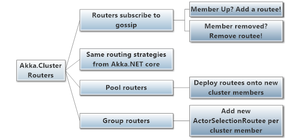
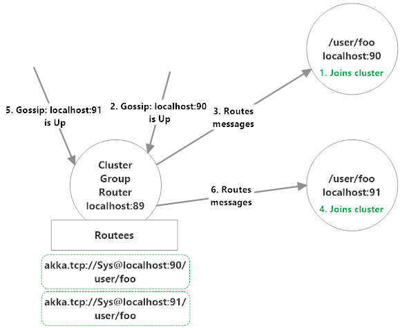
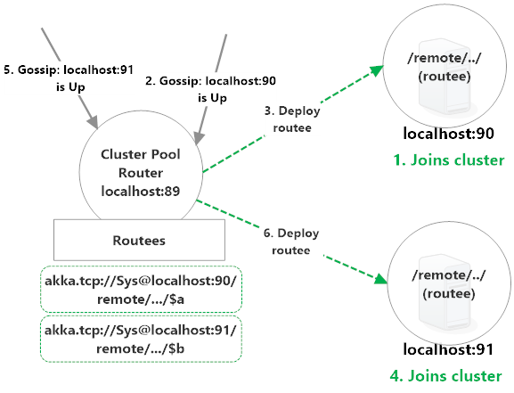

Akka.Cluster Routing
Akka.Cluster extends the capabilities of both Pool and Group routers to work across entire clusters of Akka.NET applications, and can automatically add or remove routees as new nodes join and exit the cluster.

How Routers Use Cluster Gossip
How the gossip is used depends on the type of the router. Clustered Pool routers will automatically remote-deploy routees onto nodes they discover as a result of changes in cluster membership. Group routers will add new ActorSelectionRoutees to their routees list instead.
Note: this section refers to gossip events, such as
ClusterEvent.MemberUp, which are covered here.
Clustered routers subscribe to gossip messages from the Cluster object (which you can also do in a user-defined actor), and they use the information they dynamically receive from the cluster to ad or remove routees on the fly.
A ClusterEvent.MemberUp message will cause the cluster to add a new routee (although this depends on some of the router configuration options) and a ClusterEvent.MemberRemoved will cause the clustered router to remove any routees who were on the affected node.
Cluster Routing Strategies
All of the routing strategies that are available in Akka.NET core are also available in Akka.Cluster - RoundRobin and ConsistentHash work just as well across the network as they do locally.
Types of Clustered Routers
Clustered Group Routers
The first type of router we're going to look at at clustered Group routers.

So what's happening in the diagram above? In this setup, we have three distinct nodes:
- localhost:89, who's already Up, and is the node which has a clustered
Grouprouter running on it; - localhost:90, who's not Up yet but will be routed to; and
- localhost:91, who's not Up yet and will also be routed to.
We're going to route messages from localhost:89 to all of the actors who live at path /user/foo on each of the new nodes who join. So here's the sequence of events that occurs:
- localhost:90 joins the cluster and a
ClusterEvent.MemberUpmessage gets generated on each member. Grouprouter on localhost:89 receives theClusterEvent.MemberUpmessage;Grouprouter addsakka.tcp://Sys@localhost:90/user/fooas a routee and begins routing messages to it over the network;- localhost:91 joins the cluster and a
ClusterEvent.MemberUpmessage gets generated on each member. Grouprouter on localhost:89 receives theClusterEvent.MemberUpmessage;Grouprouter addsakka.tcp://Sys@localhost:91/user/fooas a routee and begins routing messages to it over the network.
If either localhost:90 or localhost:91 was removed from the cluster at some point in the future, their routee would be removed from the Group router running on localhost:89.
Clustered Pool Routers
Clustered Pool routers differ from Group routers in that they deploy their routees remotely onto their target nodes, versus routing messages to pre-defined actor paths that may or may not exist on the remote machines.
Here's a Pool scenario equivalent to the Group one we showed earlier:

This is a virtually identical setup as the Group router:
- localhost:89, who's already Up, and is the node which has a clustered
Poolrouter running on it; - localhost:90, who's not Up yet but will be deployed onto and routed to; and
- localhost:91, who's not Up yet and will also be deployed onto and routed to.
localhost:89 is going to deploy routees onto localhost:90 and localhost:91 and subsequently route messages to them. Here's how that occurs:
- localhost:90 joins the cluster and a
ClusterEvent.MemberUpmessage gets generated on each member. Poolrouter on localhost:89 receives theClusterEvent.MemberUpmessage;Poolrouter REMOTE DEPLOYSakka.tcp://Sys@localhost:90/remote/akka/tcp/localhost:89/$aas a routee and begins routing messages to it over the network;- localhost:91 joins the cluster and a
ClusterEvent.MemberUpmessage gets generated on each member. Poolrouter on localhost:89 receives theClusterEvent.MemberUpmessage;Poolrouter REMOTE DEPLOYSakka.tcp://Sys@localhost:91/remote/akka/tcp/localhost:89/$bas a routee and begins routing messages to it over the network.
If either localhost:90 or localhost:91 dies following this setup the remote deployed routee will be killed and the Pool router will be notified via Deathwatch. If there's capacity available (we'll explain in a moment,) the Pool router will replace the dead routee by deploying a new routee onto another qualified node.
Cluster Router Config
Here are the essential options you will use to configure cluster-aware routers.
All Clustered Routers
enabled: this must be set toonin order for this to be a clustered router.allow-local-routees: determines if routee actors are allowed to be located on the same node as router actor, or only on remote nodes. Setting this tooffmeans that all the routees for this router will exist on different nodes in the cluster.nr-of-instances: this is the maximum number of total routees that this router will route to.use-role: depends on whether router is aPoolorGrouprouter
Clustered Group Router Config
nr-of-instances: this is the maximum number of total routees that this router will route to.max-nr-of-instances-per-node: this does not apply toGrouprouters.routees.paths: the comma-separated path(s) of the routees on each node in the cluster.- This setting can use what's called a wildcard path, meaning we don't care about the name of the actor in the
*position. e.g. in the Webcrawler sample, as long as the actor being deployed is namedcoordinatorsand the grandparent is namedapi, then this deployment configuration can be safely reused. You can writeActorSelections using wildcard paths also! - You do not need to specify
/userat the start of each path. It is implied.
- This setting can use what's called a wildcard path, meaning we don't care about the name of the actor in the
use-role: theGrouprouter will only route to routees at the specifiedpathson nodes marked with the given role. Can only specify one role here.
HOCON for Clustered Group Routers
Here's an example of what the HOCON for a clustered Group router looks like, taken from the WebCrawler sample:
akka {
actor{
provider = "Akka.Cluster.ClusterActorRefProvider, Akka.Cluster"
deployment {
/api/myClusterGroupRouter {
router = broadcast-group # routing strategy
routees.paths = ["/user/api"] # path of routee on each node
nr-of-instances = 3 # max number of total routees
cluster {
enabled = on
allow-local-routees = on
use-role = crawler
}
}
}
}
}
Clustered Pool Router Config
nr-of-instances: this is the maximum number of total routees that this router will first deploy, and then route to.max-nr-of-instances-per-node: the maximum number of routees that thePoolrouter will deploy onto a given cluster node.- Note that
nr-of-instancesdefines total number of routees, but number of routees per node will not be exceeded, i.e. if you definenr-of-instances = 50andmax-nr-of-instances-per-node = 2, the router will deploy 2 routees per new node in the cluster, up to 25 nodes.
- Note that
use-role: router will only deploy routees onto nodes in the cluster marked with the given role. Can only specify one role here.
HOCON for Clustered Pool Routers
Here's an example of what the HOCON for a clustered Pool router looks like:
akka {
actor{
provider = "Akka.Cluster.ClusterActorRefProvider, Akka.Cluster"
deployment {
/api/myClusterPoolRouter {
router = round-robin-pool # routing strategy
nr-of-instances = 10 # max number of total routees
cluster {
enabled = on
allow-local-routees = on
use-role = crawler
max-nr-of-instances-per-node = 1
}
}
}
}
}